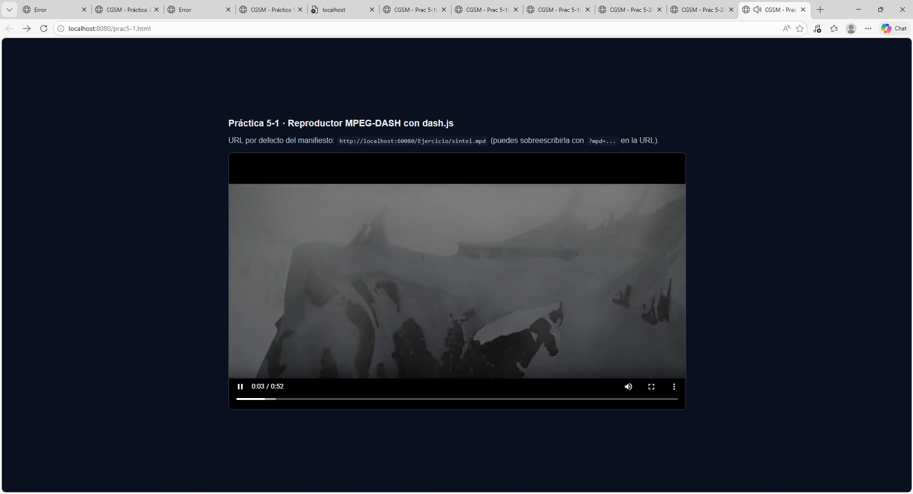
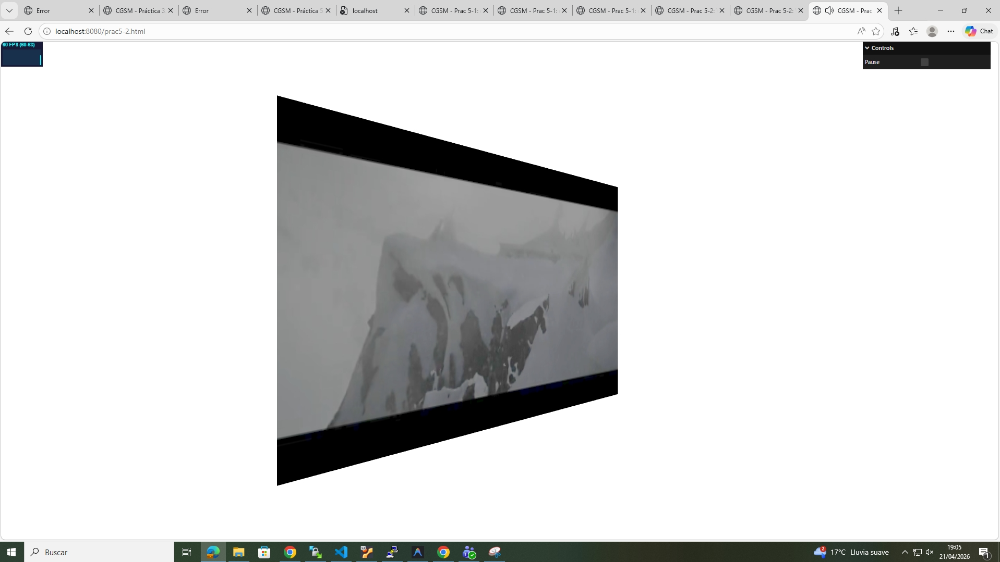

Memoria de la Sesión 5
Descripción de la práctica
En esta sesión se ha trabajado en la integración de la biblioteca Dash.js para la reproducción de contenido multimedia mediante streaming adaptativo (MPEG-DASH). Se han desarrollado dos ejercicios: un reproductor básico en HTML5 y una integración avanzada como textura de vídeo dentro de una escena de Three.js.
Ejercicio 4.1 - Reproductor DASH básico
Se ha implementado una página web que utiliza la biblioteca dash.all.min.js para inicializar un elemento de vídeo con un manifiesto DASH (.mpd). Esto permite que el reproductor ajuste automáticamente la calidad del vídeo en función del ancho de banda disponible.
Ejercicio 4.2 - Textura de vídeo DASH en Three.js
Se ha integrado el flujo de vídeo MPEG-DASH dentro de un entorno 3D. El elemento de vídeo, controlado por Dash.js, se utiliza como fuente para una THREE.VideoTexture aplicada a un plano en rotación. Se ha incluido un sistema de "overlay" para asegurar la interacción del usuario antes de iniciar el flujo de vídeo y el audio.
Dificultades encontradas y Soluciones
- Errores de tipo MIME (dash.all.min.js): Inicialmente, la biblioteca Dash.js no cargaba y la consola mostraba un error de tipo MIME (
text/html). Esto se debía a una ruta incorrecta (lib/dash.all.min.jsvs raíz). Se solucionó corrigiendo la ruta en los archivos HTML. - Conflictos de puerto (EADDRINUSE): Al intentar ejecutar el servidor de vídeos y el de la aplicación Webpack simultáneamente, hubo conflictos en el puerto 8080. Se resolvió asignando el puerto 8081 (y posteriormente 8082) al servidor de vídeos para mantener la independencia de servicios.
- Rutas del Manifiesto: El nombre del archivo generado por MP4Box (
sintel_final.mpdvssintel.mpd) y la estructura de carpetas (/Ejercicio/) causaron errores 404. Se sincronizaron los nombres tras verificar el contenido exacto del servidor local. - Interacción inicial: Los navegadores modernos bloquean el autoplay con audio si no hay una interacción previa. Se implementó un botón de inicio que inicializa tanto el reproductor Dash como la escena de Three.js simultáneamente.
Respuestas a las cuestiones
¿Qué es un manifiesto MPD y cuál es su función en DASH?
El MPD (Media Presentation Description) es un archivo XML que describe todos los componentes del flujo de vídeo: las diferentes calidades disponibles (bitrates), los segmentos de tiempo y las URLs donde se encuentran. Su función es informar al cliente (Dash.js) para que este pueda decidir qué segmento descargar en cada momento dependiendo de la red.
¿Qué ventajas aporta el streaming adaptativo frente a la descarga progresiva tradicional?
La descarga progresiva (ej. un .mp4 directo) siempre descarga el mismo archivo independientemente de la red. El streaming adaptativo fragmenta el vídeo y ofrece múltiples versiones; si la conexión empeora, el reproductor cambia a una versión de menor peso instantáneamente sin detener la reproducción.
Capturas Significativas

Reproductor DASH básico

Textura de vídeo 3D